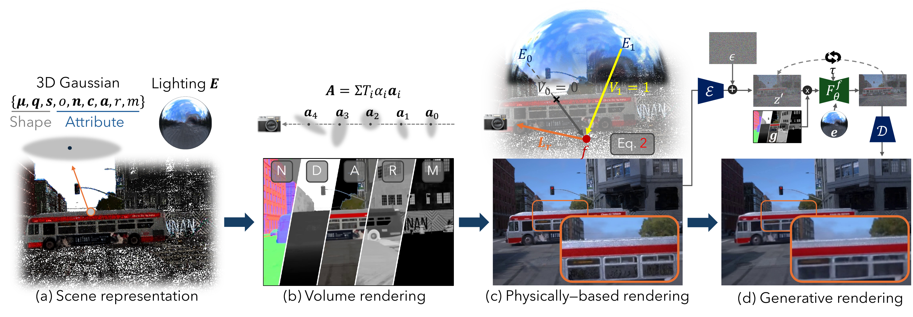
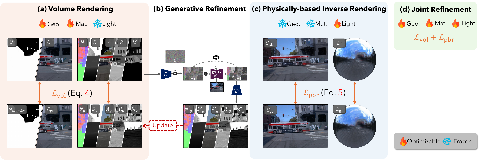

Reconstructing urban scenes from casual videos is important for autonomous driving and AR/VR. This involves solving highly ill-posed inverse rendering problems to decouple geometry, materials, and lighting. Existing methods struggle with a trade-off: physically-based rendering (PBR) respects physical lighting but is prone to optimization artifacts, while generative models synthesize photorealistic images but lack explicit 3D constraints, failing to control lighting precisely. In this paper, we present BRDFusion, a hybrid framework that combines the explicit control of physical models and the photorealism of generative models. To achieve this, our rendering pipeline first renders physically accurate, though noisy, shading via Monte Carlo ray tracing. We then inject this noisy output into a video diffusion model through a generative rendering pass. This framework alleviates artifacts while preserving 3D consistency and physically-based lighting. Experiments show that BRDFusion achieves state-of-the-art results for photorealistic relighting, night simulation, and virtual object insertion.


Urban Scene Relighting
Driving Scene Simulation
This research was funded by the National Science and Technology Council, Taiwan, under Grants NSTC 112-2222-E-A49-004-MY2 and 113-2628-E-A49-023-. The authors are grateful to Google, NVIDIA, and MediaTek Inc. for their generous donations. Yu-Lun Liu acknowledges the Yushan Young Fellow Program by the MOE in Taiwan.
@article{brdfusion,
title = {BRDFusion: Physics Meets Generation for Urban Scene Inverse Rendering},
author = {},
journal = {},
year = {}
}